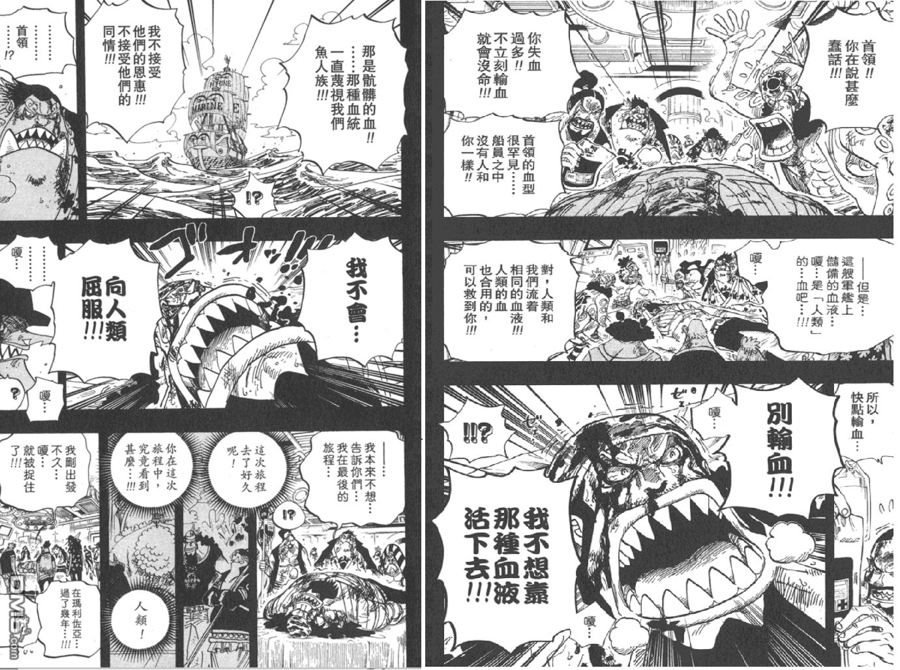
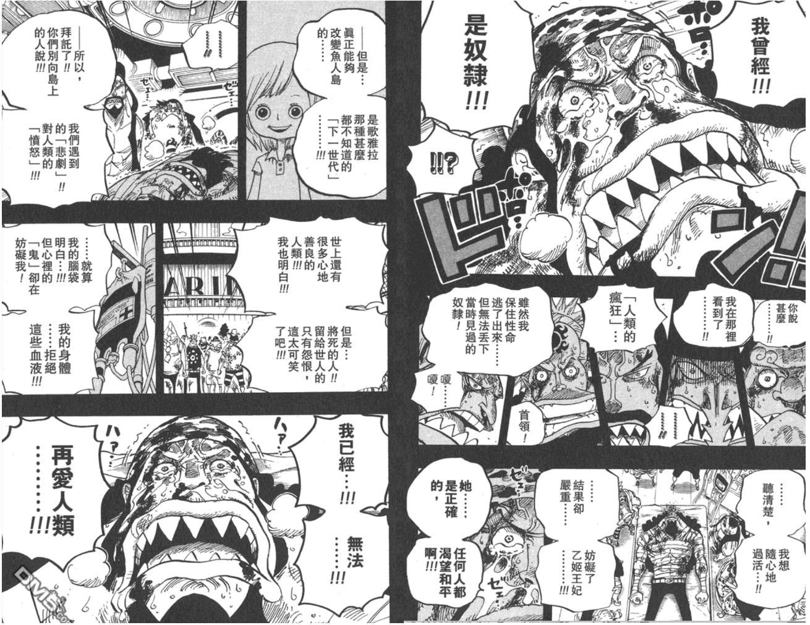
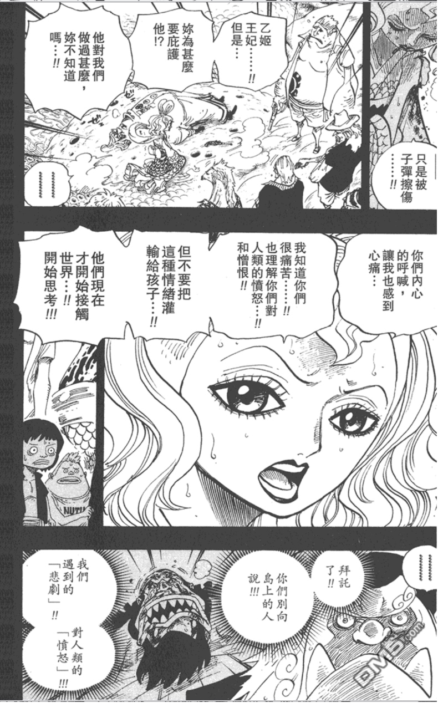
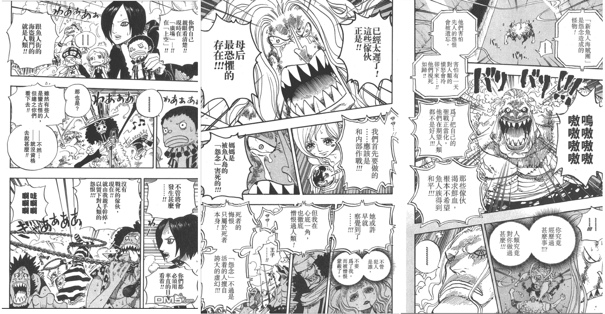

魚人島篇
故事的起點
世界存在殘酷
在兩年修行過後魯夫經過艾斯之死和雷厲的魔鬼訓練後，與夥伴們再次重逢，這次的目的地-魚人島，是一個從以前劇情鋪陳多次的重大伏筆，在將以前的細節一一兌現的同時，也逐步擴大世界觀。
我認為裡面最重要尾田想要傳達的便是種族紛爭，扣合即便是個繁榮、開化過的現代，種族歧視或相呼應的紛爭卻從未消停。
故事要從古老的年代說起，在原本人類就佔據陸地的時候，人類就從未停止戰爭，爭奪略地似乎就是他們的本性，即便是沒有想要侵略別人的無辜民眾，也得武裝自己為的就是保衛家園。
而魚人和人魚生活在水下幾萬公尺的深海，雖無法伸手觸碰藍天，香波地紅樹依就帶來給太陽的恩惠，他們天生就比人類壯碩，又可以在水下正常活動，但即便先天上存在物種優勢，在他們第一次上陸地時，
就遭到人類的排斥，即使再強大，也敵不過人類的多數優勢，幾百年來他們逐漸放棄與人類友善的念頭，轉身回到海底，從此與世隔絕。

萬物歡慶著太陽，感謝著森林，魚人們也不例外，但只要當他們被人類看到就會被企圖抓去當奴隸，在奴隸拍賣會上女性的人魚更是高達天價。
因此鯛魚魚人費雪。泰格，是這個時代下少數敢反擊天龍人的英雄，為了解救同胞與其他受難的人攻擊了聖地瑪莉喬亞，成為了解放奴隸的英雄，之後他與自幼都生長在魚人街
的兄弟們成立太陽海賊團其中便有惡龍與吉貝爾，懲奸除惡，但也堅持不殺信條，「因為一旦有了流血衝突，那就跟人類沒有兩樣了」
然而命運陡然，還是降來了悲劇。遭到人類暗算。
 也存在仁慈
在人魚島中的龍宮，乙姬王妃努力集結民心，遊說人民跟人類對話，救助遇難的還賊船，多年存下來累計1000人的連署書似乎象徵了有朝一日的希望。
但是泰德的悲劇打亂了原本如黎明升起太陽般的希望。
不過在救助了遇難的天龍人後，事情迎來了轉機，以姬遊說了世界貴族，取得了他們的保證，從此在種族友好共存上跨了一大步。
故事至此，以姬最終被暗殺了。
時代的巨輪開始運轉
惡龍與吉貝爾
尾田老師呈現矛盾、衝突時很喜歡用的筆法就是讓一件事情有多個角度。
惡龍與吉貝爾是同輩，只要出身在魚人街的小孩都情濃於血，大家都很崇拜將混亂聚集的魚人街統一的泰德大哥，可惜他們天生不同的個性，在同件事情上總有著兩極的看法。
好比惡龍總是在惹事生非、吉貝爾卻參加了自衛隊，他們也隨著泰德大哥出海，有著相同的見聞，卻逐漸步上彼此相反的道路。
吉貝爾雖與人類無過節，在泰德渲染下，認同魚人們也可以做出改變，他了解大哥雖痛恨著人類卻依舊為大義在所不辭，奔向理想；他繼承了泰德與乙姬的夙願，接受政府的徵召，成為了王下七武海，就是為了保障魚人島。
與之相反的惡龍，也跟著泰德四處見聞，見人類的善良，也見人類的醜惡，但他卻是繼承了魚人的仇恨，越來越痛恨人類；道不同，不相為謀，與吉貝爾分道揚鑣後，他開始按照自己的意志"懲罰"人類。
下一代的渲染
尾田老師最重要的第二個筆法便是刻畫下一代，作為劇情的鋪陳很有張力的描寫。
雖說前有泰德、以姬，後有吉貝爾，但是惡龍的事蹟卻是最廣為流傳的。
魚人街裡的角落裡荷帝·瓊斯與他的夥伴讀著報紙，報紙上滿堂都是英雄征戰人類，為"人魚伸張正義"的所作所為，這種渲染是很可怕，從小便遭到仇恨影響，認同持續邁入憎恨的一方。
在泰德和乙姬生命凋零之時，都曾經像身邊的人說過:「別向島上的人說，我們遇到的『悲劇』以及對人類的『憤怒』!!」
他們，荷帝帶領的新人魚海賊團，是魚人島仇恨形體，包裹了極端的惡意，帶著不健全的價值觀，侵蝕著魚人島，是比起世界上任何果實能力都還要更強大的力量，無端的憤怒、悲恨 是找不到源頭來解決的，更精確一點，他們的起點就是世世代代交替的任何一人，每個不願和解、不願停止的魚人和人類，都是加劇這個仇恨集體的來源，配上瘋狂的藥物，他們沒有了自我， 反噬著源頭的一切。
